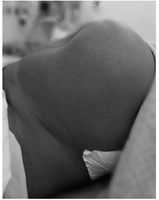
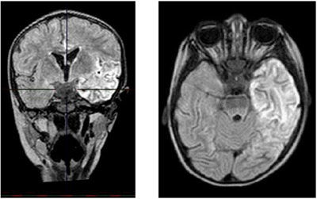
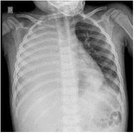
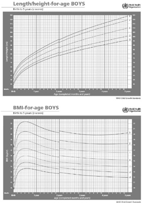

Questão 1 · Processo saúdedoença · 4000145953João, de 52 anos de idade, foi à consulta com seu médico, que o atendia há cinco anos. Ele não tinha nenhuma comorbidade até sete meses atrás, quando teve um infarto agudo do miocárdio e passou por uma revascularização do miocárdio. Na consulta, médio e paciente estabeleceram o seguinte diálogo: — Bom dia, sr. João, em que posso te ajudar? — Doutor, tenho seguido o nosso plano, estou me sentindo muito bem em relação ao peso que perdi e estou quase atingindo a meta que estabelecemos há três meses. Vim hoje aqui para ver o resultado do meu exame de colesterol. — Parabéns, João, você se saiu muito bem com as mudanças do estilo de vida e isso ajudou a reduzir seu colesterol, que também está quase no nível desejado. Alguma coisa o está preocupando? — Ahhh... não, não mesmo. — Não mesmo? — Bem, doutor, estava pensando sobre o final de ano. Não sei se poderei ficar lá no sítio no final do ano. — Por que isso está te preocupando? — É uma atividade importante para minha família, temos um pequeno sítio no interior, com uma casinha pequena, e é lá que reunimos toda a família para passar a semana entre o Natal e o ano novo. Tenho medo de ter um infarto tão longe de casa. — Pelo que me disse, parece que não participar dessa atividade seria muito difícil para você. — Sim, seria. Sabe, doutor, sinto que tantas coisas foram tiradas de mim. — João, durante os últimos meses, você passou por muitas mudanças e muitas perdas, sinto que isso foi difícil para você. — Sim, doutor, foi. Eu passei de um homem realmente saudável e sem problemas para uma pessoa que teve um ataque do coração, passei por uma grande cirurgia e tenho que tomar muitos cuidados que antes não precisava. Ainda não recuperei a energia que costumava ter. Minha esposa também está preocupada e sempre me lembra de ser mais cuidadoso. Ambos estamos muito ansiosos para reiniciar a nossa vida sexual. Foi uma grande mudança, mas, pelo menos, estou vivo. — Fico feliz em poder dizer a você que o período mais perigoso após o infarto já passou e que, agora, seu risco é um pouco menor. De alguma forma, por causa da dieta e dos exercícios, você está um pouco mais saudável. Isso é uma boa notícia, mas me preocupo com sua tristeza. O que acha de conversarmos um pouco mais sobre isso na próxima consulta? — Ah, seria ótimo. É difícil falar sobre isso, mas me ajudaria. Com base nesse caso hipotético, assinale a alternativa que apresenta o conceito predominante durante toda a conversa.
A entrevista motivacional
B coordenação do cuidado
C processo saúde-doença
D acesso
E decisão compartilhada
Questão 2 · Abordagem Comunitária · 4000145952Uma nova equipe da Estratégia Saúde da Família (ESF) foi formada e, após algumas reuniões com a equipe multipro ssional, foram decididos os pontos que deveriam ser prioridade para que a equipe conhecesse a população e a região local. Foi definido um cronograma, em que o tempo de coleta de dados não ultrapassaria o prazo de um a dois meses. Jorge, o médico da equipe, durante seus primeiros dias na unidade, descobriu que Joana, de 46 anos de idade, era uma das principais referências dos moradores. No dia seguinte, foi visitá-la em sua casa para realizar uma entrevista sobre os principais pontos de interesse da equipe. Durante a conversa, o médico fez as anotações pertinentes aos temas que a equipe selecionou como prioridade. No m da entrevista, Joana comentou que tem diabetes e que não faz o controle do fundo de olho há mais de um ano. O médico deixou um encaminhamento para que ela pudesse ir ao oftalmologista, tendo acesso ao serviço secundário, e orientou que, mesmo assim, ela precisaria agendar uma consulta presencial o mais breve possível para dar seguimento a seus cuidados. Durante o retorno à unidade, o médico observou o ambiente físico da região e o comparou com as informações que Joana passara. Com base nessa situação hipotética, assinale a alternativa que apresenta, correta e respectivamente, a ferramenta utilizada e o atributo da Atenção Primária à Saúde envolvido.
A visita domiciliar e orientação comunitária
B visita domiciliar e integralidade
C estimativa rápida e orientação comunitária
D entrevista familiar e orientação familiar
E estimativa rápida e acesso
Questão 3 · Medicina Preventiva · Sistema Único de Saúde SUS · Atenção Primária à Saúde APS no Brasil · 4000145951Dois pacientes compareceram ao acolhimento de uma UBS sem horário agendado. A primeira, Eduarda, tem 52 anos de idade, mora há duas quadras da UBS, está desempregada e gostaria de uma consulta com o médico para cuidar da sua diabetes. Na última consulta, no ano passado, estava com a diabetes controlada. O segundo, Alberto, tem 23 anos de idade, é morador de área livre e gostaria de uma nova consulta de rotina com o médico. Na consulta do ano passado, era hígido. Nenhum dos pacientes tinha outras queixas. Como a agenda estava muito cheia, a equipe optou por encaixar Alberto no mesmo dia e marcar Eduarda em uma vaga disponível nos próximos dias. Com base nesse caso hipotético, assinale a alternativa correta.
A A conduta da equipe está adequada. O princípio do SUS que mais justifica a decisão é o da equidade.
B A conduta da equipe não está adequada. O princípio do SUS que não foi respeitado foi o da descentralização: Alberto deveria ter sido encaminhado para um centro de referência do “consultório na rua”.
C A conduta da equipe não está adequada. O princípio do SUS que não foi respeitado foi o do acesso: Eduarda deveria ter sido priorizada pelo atendimento médico, pois tem diabetes e está há mais de seis meses sem controle da HbA1c.
D A conduta da equipe está adequada. O atributo da Atenção Primária à Saúde que mais justifica a decisão é o da “orientação comunitária”.
E A conduta da equipe está adequada. O princípio do SUS que mais justifica a decisão é o da universalidade.
Questão 4 · Benef ícios Previdenciários · 4000145950Uma paciente de 61 anos de idade, com histórico de diabetes, hipertensão e dislipidemia, faz uso de metformina, losartana, hidroclorotiazida e sinvastatina. Está desempregada, com di culdade nanceira, mora apenas com seu marido e não possui lhos. Trabalhava como diarista, não recolhia o INSS e, apesar de não ter limitações, não conseguiu um novo emprego por causa de sua idade. Atualmente, o marido recebe um salário-mínimo e é responsável por pagar todas as contas da casa. Ao exame físico, PA de 130 x 82 mmHg, FC de 70 bpm e IMC igual a 24. Com base nessa situação hipotética, quanto aos benefícios disponíveis no Brasil até novembro de 2020, assinale a alternativa correta.
A Como a renda per capita é de meio salário-mínimo, pela jurisprudência estabelecida, a paciente enquadra-se automaticamente no “estado de pobreza/necessidade” e faz jus ao benefício social.
B Como a paciente tem mais de sessenta anos de idade, faz jus ao benefício de prestação continuada (BPC).
C Por ter renda per capita maior que 1/4 do salário-mínimo, a paciente não poderá receber o benefício social.
D A paciente não faz jus ao benefício social.
E O valor do benefício social é de um salário-mínimo e, a cada ano, é necessário rever se o beneficiário ainda reúne as condições necessárias para recebê-lo.
Questão 5 · Rastreamento · Indicações de rastreio da osteoporose · Rastreio Câncer Colorretal · 4000145949Um paciente de 71 anos de idade foi à consulta de rotina por insistência da esposa, sem qualquer problema de saúde ou queixas no momento. É tabagista há quarenta anos (um maço por dia) e sedentário. Nega uso de álcool ou de medicamentos contínuos, comorbidades, internações ou quedas nos últimos doze meses e cirurgias prévias. Encontra-se em bom estado geral, consciente, orientado, com PA de 116 x 74 mmHg, IMC igual a 23, FC de 76 bpm e sat. de O2 de 97% em ar ambiente. Pesa 67 kg e tem 1,69 m de altura. Foram observados duas bulhas rítmicas, normofonéticas, sem sopro, e murmúrios vesiculares bilaterais. Com base nesse caso hipotético e no US Task Force, assinale a alternativa que apresenta apenas exames com benefícios comprovados para o rastreamento do paciente.
A densitometria óssea e glicemia
B ultrassonografia de tireoide e colesterol total
C TSH e colonoscopia
D glicemia e radiografia de pulmão
E ultrassonografia de abdômen e tomografia de pulmão de baixa dosagem
Questão 6 · Conceitos gerais de custeios em saúde · 4000145948Uma paciente foi à consulta, com o médico de família, para seguimento da hipertensão, que está descontrolada. Relatou que não faz o uso da medicação por causa dos efeitos colaterais e questionou se haveria alguma alternativa para o tratamento. O médico informou que outra medicação teve resultados parecidos nos estudos clínicos, mas que ela não está na lista do Rename por ter um custo um pouco mais alto. E cácia, efetividade e e ciência são termos que podem passar por sinônimos para o público leigo, mas possuem significados diferentes para especialistas em pesquisas clínicas. Com base nesse caso hipotético, assinale a alternativa que apresenta os conceitos na ordem em que aparecem no texto.
A eficiência, eficácia e efetividade
B efetividade, eficácia e eficiência
C eficácia, efetividade e eficiência
D efetividade, eficiência e eficácia
E eficiência, efetividade e eficácia
Questão 7 · Redução Relativa do Risco RRR ou Ef icácia · 4000145947Para determinar a e cácia de uma vacina, 30.000 voluntários foram randomizados em dois grupos, em que 20.000 pacientes receberam a vacina e 10.000 receberam um placebo. Após a abertura do estudo, dos cem infectados, apenas 20% tomaram a vacina. Com base nessa situação hipotética, assinale a alternativa que apresenta o valor correto da eficácia da vacina.
A 70%
B 80%
C 87,5%
D 90%
E 97,5%
Questão 8 · Medicina Preventiva · Sensibilidade · Especif icidade · 4000145946O exame físico é parte crucial do processo de investigação e diagnóstico de diversas patologias e, da mesma forma que os exames complementares, possui sensibilidade e especi cidade. Considerando essa informação e a tabela acima, em que as manobras servem para avaliar a mesma patologia, assinale a alternativa correta.
A As manobras C e E são as melhores para confirmar o diagnóstico e as manobras B e D não servem para isso.
B As manobras B e D são as melhores para confirmar o diagnóstico e as manobras C e E não servem para isso.
C As manobras C e D são as melhores para confirmar o diagnóstico e as manobras A e E não servem para isso.
D As manobras A e B são as melhores para confirmar o diagnóstico e as manobras A e E não servem para isso.
E As manobras A e B são as melhores para confirmar o diagnóstico e as manobras C e D não servem para isso.
Questão 9 · Medicina Preventiva · NNT e NNH · 4000145945Uma cidade com 300.000 habitantes precisa comprar um teste comprar para determinar o tratamento ou não de uma doença não letal e não transmissível, mas cujo tratamento do doente grave gera custos à rede de saúde. Há, no mercado, dois testes disponíveis: teste A (R$ 10,00 – sensibilidade 90% / especi cidade 70% / valor preditivo positivo 75% / valor preditivo negativo 12,5%); e teste B (R$ 10,00 – sensibilidade 70% / especi cidade 90% / valor preditivo positivo 87,5% / valor preditivo negativo 25%). O quadro grave custa R$ 25.000,00 à rede de saúde e ocorre em 10% dos casos sintomáticos. O tratamento custa R$ 1.000,00, o NNT para evitar o quadro grave é 10 e o NNH para ana laxia é 20 e, quando ocorre, tem custo de R$ 10.000,00. Com base nessa situação hipotética, assinale a alternativa correta.
A Aplicar o teste A nos suspeitos gera um gasto total menor que aplicar o teste B, devendo-se tratar apenas os pacientes graves.
B Aplicar o teste B nos suspeitos gera um gasto total menor que aplicar o teste A, devendo-se tratar apenas os pacientes graves.
C Apenas tratar os casos graves gera menor custo que aplicar os testes e tratar os casos positivos.
D Não há diferença quanto ao valor gasto entre os testes A e B, mas ambos custam menos que tratar apenas os pacientes graves.
E Não é possível determinar o custo total da aplicação dos testes nos pacientes sintomáticos.
Questão 10 · Tipos de Estudos Epidemiológicos · 4000145944Na maternidade de um hospital terciário, para verificar se o uso de um medicamento estaria relacionado com a malformação fetal, foram avaliadas todas as gestantes que entraram em trabalho de parto entre 15 de janeiro de 2018 e 20 dezembro de 2020. Foram levantados os prontuários das pacientes e foi aplicado a elas um questionário acerca do uso da medicação durante a gestação. No nal do período, foram analisadas 4.137 pacientes, das quais mil trezentas e setenta e quatro utilizaram a medicação. Das trezentas e cinquenta e sete cujos fetos apresentaram algum tipo de malformação, 70% utilizaram o medicamento estudado. Com base nesse caso hipotético, assinale a alternativa que apresenta o tipo de estudo descrito.
A caso-controle
B coorte retrospectiva
C ensaio clínico
D coorte prospectiva
E transversal
Questão 11 · Relação MédicoPaciente · Método Clínico Centrado na Pessoa · 4000145943Uma paciente foi levada à consulta com seu novo médico de família para o seguimento da obesidade e da diabetes. Nessa consulta, estabeleceu-se o seguinte diálogo entre eles: — Doutor, não consegui parei de fumar, não comecei a fazer exercício e não mudei a alimentação. Basicamente não z nada que o médico antigo mandou. — Joana, poderia me contar um pouco mais do que aconteceu desde a última consulta? — Então, doutor, nos primeiros dois dias, até quei sem fumar nenhum cigarro, mas, depois, a ansiedade aumentou e, para não descontar na comida, voltei a fumar. Exercício, nem tentei começar, sem condição nenhuma de fazer aqueles 150 minutos por semana. — Vejo que conseguiu ficar dois dias sem fumar, já é uma nova conquista. Como foram esses dois dias? — Nossa, doutor, confesso que, no primeiro dia, foi maravilhoso, me sentia realmente satisfeita comigo mesma. — E estaria disposta a parar de fumar agora? — Doutor, nesse momento, não quero. Tenho medo de ganhar muito peso por descontar na comida. — Entendi, mas e se, ao invés de parar de fumar totalmente, tentássemos reduzir a quantidade? — Acho que a reduzir eu estaria disposta. — O que acha de reduzirmos de vinte para dez cigarros por dia? — Acho que será muito pouco para mim nesse momento. — Seria possível reduzir para quinze? Se precisar, posso te ajudar a modificar seu hábito. — Para quinze consigo sozinha, doutor. — Vamos começar hoje? — Hoje não consigo, mas amanhã posso. — E sobre os exercícios, acredita que conseguiria começar? — Nesse momento, não tenho vontade de começar exercícios. — Tudo bem, já temos uma meta para a próxima consulta: reduzir para quinze cigarros a partir de amanhã. Com base nessa situação hipotética, é correto afirmar que o conceito predominante em toda a conversa foi o de
A entrevista motivacional.
B decisão compartilhada.
C processo saúde-doença.
D longitudinalidade.
E clínica ampliada.
Questão 12 · Sistema Único de Saúde SUS · 4000145942O SUS foi criado, em 1988, pela Constituição Federal brasileira, que determina que é dever do Estado garantir a saúde de toda a população. Após a sua criação, surgiram diversas leis e portarias para determinar seu funcionamento, sua estrutura e seu financiamento. Considerando essas informações, assinale a alternativa correta.
A A Constituição Federal de 1988 garante que a iniciativa privada pode prestar assistência à saúde de forma complementar no SUS, ou seja, prestar serviços aos indivíduos que formalizarem um contrato ou convênio com a instituição.
B A Constituição Federal de 1988 veda a participação, direta e indireta, de empresas ou capitais estrangeiros na assistência à saúde no País. Por isso, qualquer lei que permita a participação delas deverá ser considerada como inconstitucional.
C A Portaria n.o 2.567/2016, do Ministério da Saúde, dispõe sobre a participação complementar da iniciativa privada no SUS, determinando que o contrato administrativo tem o objetivo de firmar uma parceria na prestação de serviços de saúde.
D A Lei Federal n.o 9.637/1998 estabeleceu a necessidade de as instituições privadas serem sem fins lucrativos para que sejam qualificadas como organizações sociais, mesmo que a Constituição Federal não vede a participação complementar de empresas com fins lucrativos no SUS.
E Apesar de o saneamento básico e a proteção do meio ambiente impactarem na saúde individual e coletiva, não estão no escopo de atribuições do SUS.
Questão 13 · Pesquisa Clínica · 4000145941O processo de desenvolvimento de vacinas passa por diversas etapas. Acerca das fases clínicas do desenvolvimento de vacinas, assinale a alternativa correta.
A Após aprovação em estudos clínicos de fase III, a vacina é liberada para que seja utilizada pela população em geral, uma vez que todos os riscos relacionados a ela já são conhecidos.
B Na fase II, é definida a capacidade da vacina de promover imunogenicidade, ou seja, sua eficácia em gerar anticorpos e prevenir a doença na rotina da pessoa.
C Em todas as quatros fases, os grupos são, obrigatoriamente, divididos em grupo de intervenção e controle com placebo.
D O número necessário para tratar (NNT) costuma ser obtido a partir da fase IIb/III, enquanto o número necessário para causar dano (NNH) pode ser obtido nas fases I que incluam um grupo-controle.
E Devido aos riscos de desenvolverem a doença, voluntários saudáveis não são incluídos na fase I.
Questão 14 · Comunicação de Acidente de Trabalho CAT · 4000145940Um paciente de 31 anos de idade, cozinheiro, chegou à UBS após acidente com faca, que ocorreu durante o trabalho no restaurante em que é contratado. Com base nesse caso hipotético, assinale a alternativa que apresenta as orientações mais adequadas a serem dadas ao paciente após a avaliação adequada e a limpeza e a sutura da lesão.
A informá-lo de que é fundamental abrir um boletim de ocorrência, esclarecer sobre os cuidados necessários com a lesão e prescrever sintomático para o alívio da dor
B orientá-lo a procurar um advogado ou assistente social para verificar as possibilidades de uma ação trabalhista, esclarecer os possíveis sinais de alarme do tratamento e introduzir antibiótico profilático
C informá-lo de que o caso será denunciado ao CEREST, esclarecer sobre os cuidados necessários e prescrever sintomáticos para a dor
D explicar a ele que foi um acidente de trabalho, pedir que ele tome mais cuidado e introduzir antibiótico profilático
E orientá-lo sobre o preenchimento da CAT pela empresa e sobre a notificação da ocorrência, esclarecer sobre os cuidados necessários e prescrever sintomáticos para o alívio da dor
Questão 15 · Política Nacional de Atenção Básica PNAB · 4000145939Uma paciente de 52 anos de idade foi à consulta não agendada com o médico de família e comunidade na UBS para cuidar da pressão, da diabetes, da dor nas costas, da dor de cabeça e da dificuldade para iniciar o sono. Com base nessa situação hipotética e nos atributos da atenção primária e da boa prática médica, assinale a alternativa correta.
A Não é necessário abordar todas as queixas no mesmo dia, pois a coordenação do cuidado pressupõe a construção da relação médico-paciente ao longo do tempo.
B Como não é possível abordar todas as queixas em uma única consulta, o médico deve determinar quais temas serão relevantes para aquela consulta.
C A melhor maneira de se obter mais informações sobre as queixas da paciente é por meio de perguntas fechadas.
D Para que o princípio da integralidade seja respeitado, é necessário que sejam abordadas, mesmo que parcialmente, todas as queixas da paciente no mesmo dia.
E Todas as queixas trazidas pela paciente podem ser resolvidas pela Atenção Primária à Saúde.
Questão 16 · Tipos de Estudos Epidemiológicos · Risco Relativo RR Razão de Riscos · 4000145938Um grupo de médicos elaborou um estudo para avaliar a influência do aleitamento materno exclusivo (AME) até os seis meses de vida no surgimento de glioblastoma multiforme (GBM) em indivíduos de sessenta a oitenta anos de idade. É importante destacar que o grupo de comparação não pode ter antecedente de GBM. Com base nesse caso hipotético, assinale a alternativa que apresenta, correta e respectivamente, o estudo mais indicado para avaliar essa relação e sua medida de associação.
A caso-controle e razão de chances
B coorte e risco relativo
C caso-controle e razão de chances
D caso-controle e risco relativo
E coorte e risco relativo
Questão 17 · Estratégia de observação longitudinal x transversal · Medicina Preventiva · Causalidade · 4000145937Em 31 dezembro de 2019, Peng Yinhyua e outros médicos de Wuhan reportaram ao governo chinês e à Organização Mundial de Saúde (OMS) sobre uma nova pneumonia e, em janeiro de 2020, foi identi cado o genoma do então chamado 2019-nCoV. Em janeiro, um grupo de médicos fez um trabalho para verificar a frequência do novo vírus em pacientes com e sem pneumonia no hospital municipal de Wuhan. Quanto a esse tema, assinale a alternativa correta.
A A medida de associação desse estudo é a prevalência.
B Para obter a medida de frequência nesse caso, o estudo com mais custo-efetividade é a coorte hospitalar.
C Um estudo transversal não é capaz de responder adequadamente à pergunta proposta.
D Trata-se de um estudo que demanda um longo período de observação.
E Esse estudo é limitado por não comprovar a causalidade.
Revisar: possível letra faltando em enunciado
Questão 18 · Financiamento em Saúde · 4000145936Toda vez que o médico pede um exame ou o paciente pressiona para isso, há um gasto que, no fim das contas, vai pesar no bolso da sociedade inteira. Drauzio Varella. Tendo em vista as boas práticas médicas e o texto acima, assinale a alternativa correta.
A O conceito financeiro contido na frase de Drauzio Varella apenas se aplica ao SUS, que tem financiamento estatal.
B A crítica das campanhas de prevenção de benefícios duvidosos faz parte da prevenção que tangencia a fala de Drauzio.
C Quando o médico solicita um exame por pressão do paciente, ele o faz para garantir o acesso – atributo da atenção primária.
D Faz parte da coordenação do cuidado, atributo da atenção primária, solicitar exames em prol do vínculo.
E Solicitar exames, mesmo quando não forem necessários, é importante para garantir a longitudinalidade do cuidado.
Questão 19 · Gênero · 4000145935Em julho de 2020, a prefeitura de São Paulo publicou o protocolo para o atendimento de pessoas transexuais e travestis no município de São Paulo. Em relação ao atendimento dessa população, assinale a alternativa correta.
A Nome social é o nome com o qual a pessoa quer ser tratada, independentemente do motivo e de registros civis. É um direito das pessoas usuárias do Sistema Único de Saúde (SUS) e, portanto, dever de toda a equipe o tratamento da pessoa com o nome e os pronomes que ela escolher. Entretanto, se o documento não for ratificado, as receitas e o prontuário deverão conter o nome civil.
B A Portaria SAS/MS n.o 457/2008 instituiu o processo transexualizador no SUS, que garante o direito de acesso à hormonização e às intervenções cirúrgicas após acompanhamento por equipe multiprofissional por, pelo menos, dois anos.
C É desejado que o médico inserido na Atenção Primária à Saúde aprenda a acompanhar e a prescrever a hormonização de pessoas transexuais que desejem transformações corporais, independentemente da avaliação prévia do endocrinologista.
D A Resolução CFM n.o 2.265/2019 ressalta que o tratamento hormonal cruzado só poderá ser iniciado a partir dos dezoito anos de idade.
E Apesar de o uso do nome social ser exigido por lei e evitar desavenças com o paciente, não existe evidência de que o respeito a ele gere melhor desfecho clínico.
Questão 20 · Modelos do sistemas de saúde bismarckianos beveridgeanos e smithianos · 4000145934São modelos diferentes para se nanciar a seguridade social e(ou) o sistema de saúde o bismarckiano e o beveridgiano. A respeito deles, assinale a alternativa correta.
A Segundo o modelo beveridgiano, a seguridade social deve ser financiada em conjunto, pelo empregador e pelo empregado.
B No Brasil, a previdência social e o sistema de saúde baseiam-se no modelo beveridgiano.
C No Brasil, o financiamento do sistema de saúde privado e da seguridade social baseiam-se no sistema beveridgiano, enquanto o financiamento do sistema de saúde público e da assistência social baseia-se no sistema bismarckiano.
D No modelo bismarckiano, os seguros sociais são condicionados a uma contribuição prévia e o montante das prestações é proporcional a ela.
E Não é possível que os dois modelos coexistam no mesmo país.
Questão 21 · Hemorragias pós parto HPP e rotura uterina · Puerpério · Def inição · 4000145933A hemorragia pós-parto (HPP) está entre as principais causas de óbito materno. O Ministério da Saúde, juntamente com a OPAS/OMS, instituiu a estratégia Zero Morte Materna por Hemorragia Pós-Parto, que consiste em treinamento em massa das equipes assistenciais, a m de diagnosticar, de maneira adequada, e tomar as medidas para a correção do quadro de HPP em tempo hábil. Essa estratégia vem salvando vidas. Sendo assim, assinale a alternativa que apresenta a definição de HPP de acordo com a FIGO.
A sangramento excessivo no pós-parto imediato que leve à queda dos níveis hematimétricos em 20% dos níveis basais
B sangramento excessivo, pós-parto, devido à atonia uterina
C sangramento excessivo, no 4.o período, devido à atonia uterina ou à retenção placentária
D sangramento excessivo no 4.o período, devido à atonia uterina e(ou) à retenção placentária e(ou) a lesões do trajeto
E perda sanguínea acima de 500 mL após o parto vaginal ou acima de 1.000 mL após o parto cesáreo em 24 h ou qualquer perda sanguínea pelo trato genital capaz de causar instabilidade hemodinâmica
Questão 22 · Síndrome HELLP · Obstetrícia · 4000145932A síndrome HELLP acontece nos casos graves de pré-eclâmpsia e de eclâmpsia, quando associados à hemólise, à elevação das enzimas hepáticas e à plaquetopenia. Acerca da fisiopatologia dessa síndrome, assinale a alternativa correta.
A Lesões endoteliais ativam plaquetas, induzindo a agregação e a formação de trombos. Tal processo leva ao consumo exacerbado das plaquetas, culminando em trombocitopenia de consumo.
B O aumento da permeabilidade vascular é o principal evento relacionado à elevação de enzimas hepáticas.
C A permeabilidade vascular aumentada favorece o extravasamento de hemácias e plaquetas para o terceiro espaço e esse processo determina a plaquetopenia e a hemólise.
D A plaquetopenia associada ao consumo de fibrina e aos fatores de coagulação nos capilares sobrecarrega o fígado e, por isso, há elevação das enzimas hepáticas.
E A vasodilatação determinada por intensa resposta inflamatória causa lesão endotelial, que, por sua vez, ativa a cascata da coagulação e a passagem das hemácias pelas redes de fibrina, causando hemólise.
Questão 23 · Obstetrícia · Eclâmpsia · 4000145931Uma paciente de dezesseis anos de idade, primigesta, com idade gestacional de 36 semanas e dois dias, deu entrada no pronto-atendimento em estado pós-comicial. Acompanhante refere que estava assistindo à novela quando passou a convulsionar (tempo decorrido da convulsão até chegada no pronto-atendimento em torno de 25 minutos). Não tem antecedentes prévios de epilepsia. Acompanhamento insu ciente no pré-natal, que se iniciou tardiamente (26 semanas), realizando apenas duas consultas. Ao exame físico: torporosa; não contactante; Glasgow 11; PA de 196 x 121 mmHg; edema 4+/4; altura uterina de 28 cm; BCF 96 bpm; dinâmica uterina ausente; e tônus uterino normal. Ao toque vaginal, colo posterior, grosso e impérvio. Cardiotocogra a mostra frequência cardíaca fetal bradicárdica de 92 bpm, com variabilidade de 5 bpm, ausência de acelerações transitórias e sem desacelerações. A conduta nessa situação hipotética deverá ser
A sulfato de magnésio 2 g IV em bólus lento (dose de ataque), seguido de sulfato de magnésio 1 g/h (dose de manutenção) e indução do trabalho de parto, uma vez que a vitalidade fetal está adequada.
B sulfato de magnésio 4 g IV em bólus lento (dose de ataque), seguido de sulfato de magnésio 4 g/h (dose de manutenção), internação para compensação clínica materna e aguardar o termo para a interrupção da gestação.
C sulfato de magnésio 8 g IV em bólus lento (dose de ataque), seguido de sulfato de magnésio 0,5 g/h (dose de manutenção) e interrupção da gestação.
D dose de ataque de sulfato de magnésio 4 g IV em bólus lento (dose de ataque), seguido de sulfato de magnésio 1 g/h (dose de manutenção) e interrupção da gestação.
E dose de ataque de sulfato de magnésio 6 g IV em bólus lento (dose de ataque), seguido de sulfato de magnésio 0,5 g/h (dose de manutenção) e internação para compensação clínica materna, e aguardar o termo para a interrupção da gestação.
Revisar: possível letra faltando em enunciado
Questão 24 · Estática f etal · Obstetrícia · Parto · 4000145930Assinale a alternativa que apresenta, correta e respectivamente, a variedade de posição fetal, o ponto de referência fetal, o diâmetro de insinuação e seu diâmetro em centímetros.
A apresentação cefálica defletida de 1.° grau, bregma e diâmetro occipto-frontal com 12 cm
B apresentação cefálica defletida de 2.° grau, naso e diâmetro occipto-mentoniano com 12 cm
C apresentação cefálica defletida de 3.° grau, mento e diâmetro suboccipto-mentoniano com 9,5 cm
D apresentação cefálica fletida, occipício e diâmetro occipto-bregmático com 9,5 cm
E apresentação cefálica fletida, occipício e diâmetro suboccipto-bregmático com 12 cm
Questão 25 · Obstetrícia · Acretismo placentário · 4000145929Uma gestante (G4 PC3 A1), com idade gestacional de 36 semanas e quatro dias, ao exame ultrassonográ co, apresenta feto único e vivo, em situação transversa. Biometria fetal de 34 semanas e seis dias e peso fetal estimado de 2.377 g no percentil entre 10 e 50 (curva de Hadlock). Líquido amniótico normal, com maior bolsão vertical de 38 mm. A placenta estende-se anterior e posteriormente, recobrindo o colo uterino, com sinais de invasão do miométrio. Colo uterino e Dopplervelocimetria mostram vascularização anômala, sugerindo invasão vesical na topogra a da cicatriz das cesarianas prévias. Nesse caso hipotético, o diagnóstico é o de placenta prévia
A centro-total, com sinais sugestivos de acretismo placentário.
B centro-total, com sinais sugestivos de percretismo placentário.
C centro-total, com sinais sugestivos de incretismo placentário.
D centro-parcial, com sinais sugestivos de acretismo placentário.
E marginal, com sinais sugestivos de acretismo placentário.
Revisar: possível letra faltando em enunciado
Questão 26 · Doenças associadas à gestação · Doenças inf ecciosas na gestação HIV síf ilis hepatites herpes · 4000145928Obstetrícia Uma paciente primigesta de dezessete anos de idade iniciou pré-natal tardiamente, com idade gestacional de dezenove semanas e quatro dias. Na consulta de retorno, então com vinte e uma semanas e seis dias, tem sorologia para toxoplasmose, com IgM e IgG positivos. Com base nessa situação hipotética, assinale a alternativa que apresenta a melhor condução a partir do resultado recebido.
A iniciar espiramicina 3 g ao dia e encaminhar a gestante para a realização de amniocentese e pesquisa de PCR para toxoplasmose no líquido amniótico
B realizar teste de avidez da IgG para toxoplasmose e encaminhar a gestante para a realização de amniocentese e pesquisa de PCR para toxoplasmose no líquido amniótico se o teste apresentar alta avidez
C realizar teste de avidez da IgG para toxoplasmose e encaminhar a gestante para a realização de amniocentese e pesquisa de PCR para toxoplasmose no líquido amniótico se o teste apresentar baixa avidez
D iniciar espiramicina 3 g ao dia, realizar teste de avidez da IgG para toxoplasmose e manter a medicação se o teste apresentar alta avidez
E iniciar espiramicina 3 g ao dia, realizar teste de avidez da IgG para toxoplasmose e manter a medicação se o teste apresentar baixa avidez
Questão 27 · Diagnóstico · Controle glicêmico · 4000145927Uma gestante de 39 anos de idade, G2 PN1 A0, com idade gestacional de dez semanas e três dias, compareceu à consulta de pré-natal com glicemia de jejum de 94 mg/dL. Com base nesse caso hipotético, assinale a alternativa correta.
A A paciente deverá repetir a glicemia de jejum e, caso esteja acima de 94 mg/dL, realizar imediatamente TOTG 75 g para a confirmação diagnóstica de diabetes gestacional.
B A paciente deverá realizar TOTG 75 g para a confirmação diagnóstica de diabetes gestacional. Caso seja confirmada, deverá ser encaminhada para acompanhamento nutricional e iniciar tratamento medicamentoso e controle glicêmico.
C A paciente deverá realizar TOTG 75 g para a confirmação diagnóstica de diabetes gestacional. Caso seja confirmada, deverá ser encaminhada para acompanhamento nutricional, recebendo indicação de atividade física e controle glicêmico.
D A paciente tem diagnóstico de diabetes gestacional, devendo ser encaminhada para acompanhamento nutricional e iniciar tratamento medicamentoso e controle glicêmico.
E A paciente tem diagnóstico de diabetes gestacional, devendo ser encaminhada para acompanhamento nutricional e iniciar atividade física e controle glicêmico.
Questão 28 · Parto vaginal operatório · Tipos de f órcipes · Distocia f uncional de objeto de trajeto · 4000145926Uma primigesta, com quarenta semanas e quatro dias de gestação, encontra-se analgesiada, em período expulsivo há 3 h. Passou, então, a apresentar bradicardia fetal persistente, com BCF de 65 bpm há quatro minutos. Ao exame físico: altura uterina – 34 cm; e dinâmica uterina – quatro contrações de 35” em 10’. Ao toque vaginal, colo com dilatação total. Bolsa rota. Apresentação cefálica fletida, sem assinclitismo, em +2 de DeLee e variedade de posição OEA. Nessa situação hipotética, a conduta será fórceps de
A Simpson, com rotação de 45° no sentido horário.
B Simpson, com rotação de 45° no sentido anti-horário.
C Kielland, com rotação de 90° no sentido horário.
D Kielland, com rotação de 90° no sentido anti-horário.
E Kielland, sem rotação.
Questão 29 · Hemorragias pós parto HPP e rotura uterina · Sangramento segunda metade da gestação · 4000145925Intercorrências obstétricas obstetrícia patológica Uma parturiente (G3 PC1 A1), com idade gestacional de 39 semanas e três dias e gestação de risco habitual, na admissão, refere trabalho de parto de início espontâneo. Apresenta, ao exame físico, altura uterina de 41 cm, dinâmica uterina de quatro contrações de 35” em 10’ e batimentos cardíacos fetais de 148 bpm. O toque vaginal: colo posteriorizado; esvaecido 60%; dilatado 4 cm; bolsa íntegra; e apresentação cefálica. Durante a evolução do trabalho de parto, detectou-se taquissistolia (6 contrações de 50” em 10’), bradicardia fetal e intensa hemorragia vaginal. A paciente foi imediatamente encaminhada para a sala cirúrgica para cesariana de emergência. Após a anestesia geral e com a paciente em mesa cirúrgica aguardando a antissepsia abdominal, o que se viu foi a imagem mostrada a seguir. Com base nesse caso hipotético, é correto afirmar que o diagnóstico é o de

A rotura de vasa prévia.
B rotura de seio marginal.
C descolamento prematuro de placenta.
D rotura uterina.
E placenta prévia.
Questão 30 · Sistema cardiovascular e hematopoiético · Sistema respiratório · Sistema endócrino e metabolismo · 4000145924O organismo materno, a m de gestar de maneira siológica, vive inúmeras modi cações adaptativas. Essas alterações ocorrem tanto nos órgãos reprodutores quanto de forma sistêmica. A respeito das modi cações gravídicas, assinale a alternativa correta.
A No terceiro trimestre, há o decréscimo de 15% da frequência cardíaca, associado ao aumento de 45% a 50% do volume sanguíneo.
B Há o aumento da frequência respiratória, contudo o volume corrente e a ventilação por minuto em repouso se mantêm nos valores pré-gravídicos.
C O metabolismo lipídico materno apresenta uma fase anabólica no primeiro e no segundo trimestre e uma fase catabólica no terceiro trimestre.
D A taxa de filtração glomerular aumenta, porém, devido à ação progestagênica, há o aumento na creatinina plasmática.
E O consumo de glicose pelo feto é contínuo e a ingestão materna, intermitente. Para manter a fonte de energia fetal contínua, o transporte de glicose através da placenta ocorre por osmose.
Questão 31 · Prolapsos de órgãos pélvicos · 4000145923Uma paciente de 45 anos de idade queixa-se de “bola na vagina”, associada à sensação de peso. Ao exame físico, segundo a classificação para a quantificação de prolapso de órgãos pélvicos (POP-Q), foram observados os achados a seguir. Com base nessa situação hipotética, assinale a alternativa que apresenta o tratamento mais adequado para a principal queixa da paciente.
A cirurgia de Burch
B colporrafia anterior
C colporrafia posterior
D colpossacrofixação videolaparoscópica
E fixação sacroespinhal, via vaginal
Questão 32 · Síndrome dos ovários policísticos · 4000145922Uma paciente de 29 anos de idade queixa-se de irregularidade menstrual há quatro anos. Teve menarca aos 11 anos de idade, com ciclos regulares, com duração de cinco dias e intervalos de trinta dias. Há quatro anos, notou o aumento do intervalo dos ciclos, permanecendo até seis meses sem menstruar. Queixa-se ainda de acne e aumento da pilificação. Com base nesse caso hipotético, assinale a alternativa que apresenta a condição que está mais frequentemente associada ao diagnóstico mais provável.
A hipertensão
B hipotireoidismo
C hiperplasia adrenal
D neoplasia de ovário
E resistência insulínica
Questão 33 · Tratamento · 4000145921Uma paciente de 27 anos de idade, com ciclos menstruais regulares, de uxo moderado, queixa-se de dismenorreia e dispareunia de profundidade há dois anos. Nuligesta, está tentando engravidar há seis meses. Realizou RNM, que evidenciou nódulo de endometrioma de 6 cm em ovário direito. Submetida à videolaparoscopia, no inventário da cavidade, além do endometrioma, foram observadas lesões negras, puntiformes, e falha peritoneal em fundo de saco posterior. Com base nessa situação hipotética, assinale a alternativa que apresenta a conduta mais adequada.
A interromper cirurgia e indicar fertilização in vitro
B drenagem simples do endometrioma e cauterização das lesões peritoneais
C drenagem, com extirpação da cápsula do endometrioma, e ressecção do peritônio acometido
D salpingooforectomia à direita e cauterização das lesões peritoneais
E histerectomia total, com salpingectomia bilateral, drenagem, com extirpação da cápsula do endometrioma, e cauterização das lesões peritoneais
Questão 34 · Def inição · 4000145920Uma paciente de 34 anos de idade, com queixa de sangramento uterino anormal, realizou uma ultrassonogra a transvaginal, que evidenciou: nódulo hipoecogênico, com limites bem definidos, medindo 3 cm; manto interno de 0 cm; e manto externo de 2 cm. Com base nesse caso hipotético e na classificação da FIGO, a lesão pode ser classificada como
A FIGO 0.
B FIGO 1.
C FIGO 2.
D FIGO 3.
E FIGO 4.
Questão 35 · Estadiamento · 4000145919Uma paciente de 58 anos de idade queixa-se de aumento do volume abdominal há seis meses. Foi diagnosticada com adenocarcinoma seroso de ovário, cujo estadiamento revelou tumor em ambos os ova na super c Com base nessa situação hipotética, assinale a alternativa que apresenta, correta e respectivamente, o estadiamento conforme os sistemas de classificação da Federação Internacional de Ginecologia e Obstetrícia (FIGO) e o tratamento mais adequado.
A estádio IA – histerectomia total abdominal, com salpingooforectomia bilateral e conduta expectante após
B estádio IA – quimioterapia neoadjuvante, seguida por histerectomia total abdominal, com salpingooforectomia bilateral
C estádio IB – histerectomia total abdominal com salpingooforectomia bilateral e conduta expectante após
D estádio IB – quimioterapia neoadjuvante, seguida por histerectomia total abdominal, com salpingooforectomia bilateral
E estádio IIA – quimioterapia neoadjuvante, seguida por histerectomia total abdominal, com salpingooforectomia bilateral
Questão 36 · Lesão intraepitelial escamosa de baixo grau · 4000145918Uma paciente de 23 anos de idade, com vida sexual ativa e assintomática, realizou colpocitologia cujo resultado foi lesão intraepitelial escamosa de baixo grau. Teste de HPV-DNA foi negativo. Com base nesse caso hipotético, assinale a alternativa que apresenta a conduta mais adequada segundo o Ministério de Saúde.
A repetir colpocitologia em três anos
B repetir exames imediatamente
C colposcopia
D cauterização da zona de transformação
E excisão da zona de transformação
Questão 37 · Vaginose bacteriana · Abordagem da paciente com queixa de corrimento vaginal · 4000145917Uma paciente de 34 anos de idade, queixa-se de leucorreia amarelada de odor fétido. Ao exame físico, apresentou teste das aminas positivo. À microscopia a fresco, foram observadas células epiteliais recobertas por cocobacilos, com o apagamento de suas bordas conferindo aspecto rendilhado. Com base nessa situação hipotética, assinale a alternativa que apresenta, correta e respectivamente, o diagnóstico e o tratamento a ser indicado para a paciente.
A candidíase – fluconazol 150 mg, via oral, em dose única
B vaginose bacteriana – metronidazol 100 mg/g, via vaginal, por cinco dias
C tricomoníase – tinidazol 2 g, via oral, em dose única
D vaginose bacteriana – bicarbonato de sódio 150 mg, via vaginal, por sete dias
E tricomoníase – metronidazol 500 mg, via oral, de doze em doze horas, por sete dias
Questão 38 · Doença Inf lamatória Pélvica · 4000145916Uma paciente de 28 anos de idade, com queixa de dor pélvica há uma semana, associada à leucorreia e febre há dois dias, refere vida sexual ativa, em uso regular de anticoncepcional oral combinado. Ao exame físico, encontrava-se em bom estado geral, normotensa e normocárdica. Abdome inocente. Ao especular, presença de secreção endocervical purulenta e, ao toque vaginal, dor à mobilização do colo. Com base nesse caso hipotético, para estabelecimento do diagnóstico, constitui critério maior, segundo o Ministério da Saúde o(a)
A evidência histopatológica de endometrite.
B comprovação laboratorial de cervicite por gonococo, clamídia ou micoplasma.
C presença de abscesso tubo-ovariano à ultrassonografia.
D conteúdo vaginal ou a secreção endocervical anormal.
E dor à mobilização do colo uterino.
Questão 39 · Rastreamento mamográf ico · 4000145915Segundo a Febrasgo, nas mulheres sem fatores de risco, a mamogra a, com propósito de detectar lesões precursoras do câncer de mama ou câncer de mama em estádios iniciais, deve ser realizada
A anualmente, dos quarenta aos 49 anos de idade, e, a cada dois anos, dos cinquenta aos 74 anos de idade.
B anualmente, dos 45 aos 54 anos de idade, e, a cada dois anos, a partir dos 55 anos de idade.
C anualmente, dos quarenta aos setenta anos de idade.
D a cada dois anos, dos cinquenta aos 74 anos de idade.
E a cada três anos, dos cinquenta aos 69 anos de idade.
Questão 40 · Hiperprolactinemia · Roteiro diagnóstico · Hiperprolactinemia · 4000145914Uma paciente de 28 anos de idade, nuligesta, queixa-se de amenorreia há sete meses. Refere depressão e faz uso de haloperidol há um ano. Teve a menarca aos catorze anos de idade, com ciclos menstruais regulares até o início do quadro depressivo. Ao exame físico, IMC 22. Ausência de alterações no exame ginecológico. USG transvaginal sem alterações. Com base nessa situação hipotética, assinale a alternativa que apresenta o diagnóstico mais provável.
A hipertireoidismo
B síndrome de Sheehan
C anorexia
D hiperprolactinemia
E insuficiência ovariana prematura
Questão 41 · Vacina contra rotavírus · Pediatria · 4000145913Em relação à infecção por rotavírus e às suas vacinas, assinale a alternativa incorreta.
A Lactentes filhos de mães infectadas pelo HIV, mesmo que assintomáticos, não podem receber as vacinas de rotavírus atualmente licenciadas.
B As vacinas atualmente licenciadas são compostas de vírus vivos atenuados.
C As vacinas monovalente humana e pentavalente bovino-humana demonstraram menor eficácia em países da África e da Ásia que em países da Europa e da América Latina, porém se associaram a maior impacto potencial de redução de formas graves da doença.
D Virtualmente, todas as crianças, até que completem cinco anos de idade, já terão se infectado pelo rotavírus.
E A primeira dose da vacina deve ser feita até os três meses e quinze dias de vida e a segunda dose, até os sete meses e 29 dias de vida.
Questão 42 · Síndrome Inf lamatória Multissistêmica · 4000145912Uma das características mais intrigantes da pandemia por covid-19 é o comportamento da doença em crianças. Em relação à síndrome inflamatória multissistêmica pediátrica associada à covid-19 (SIM-P), assinale a alternativa correta.
A Desde os primeiros relatos na Europa, os lactentes têm sido os mais frequentemente acometidos.
B A terapia de escolha nesses casos é a base de uso precoce de ivermectina e azitromicina.
C Está associada a taxas de letalidade acima de 10%.
D Intensa replicação viral é um achado frequente nesses casos, com a maioria apresentando RT-PCR positivo para SARS-CoV-2.
E Alterações cardiovasculares e gastrointestinais são frequentemente observadas nesses casos.
Questão 43 · Sarampo · 4000145911Desde o ano de 2018, o Brasil voltou a conviver com surtos de sarampo em diversas localidades. Considerando essa informação, assinale a alternativa que apresenta uma das orientações do Ministério da Saúde para controlar esses surtos.
A Deve-se implementar a dose zero da vacina tríplice viral, incluindo todas as crianças menores de um ano de idade.
B Pessoas de um a 29 anos de idade que tenham registro documentado de uma dose de vacina tríplice viral não precisam receber doses adicionais.
C Gestantes em situação epidemiológica de risco podem receber a vacina tríplice viral.
D Indivíduos de trinta a 59 anos de idade não vacinados ou sem informação devem receber uma dose da vacina tríplice viral.
E Deve-se antecipar todo o esquema de vacinação para o sarampo, ou seja, a primeira dose aos seis meses de vida e a segunda dose aos doze meses de vida, considerando, assim, o esquema vacinal completo.
Questão 44 · Epif isiólise do Fêmur Proximal · 4000145910Um paciente foi levado ao pronto-socorro com quadro de dor no quadril há um mês, irradiada para a face interna da coxa e para o joelho, com piora há dois dias, associada à claudicação. Foram realizados exames radiográ cos, que evidenciaram deslizamento da cabeça do fêmur em relação ao colo. Com base nesse caso hipotético, assinale a alternativa correta.
A Em pacientes de quatro a oito anos de idade, geralmente não está associada a doenças sistêmicas, visto que é uma doença idiopática.
B Em pacientes de quatro a oito anos de idade, geralmente está associada a doenças endocrinometabólicas.
C Em pacientes de quatro a oito anos de idade, geralmente está associada a traumas de alta energia.
D Em pacientes de onze a quinze anos de idade, geralmente não está associada a doenças sistêmicas, visto que é uma doença idiopática.
E Em pacientes de onze a quinze anos de idade, geralmente está associada a doenças endocrinometabólicas.
Revisar: possível letra faltando em enunciado
Questão 45 · Pediatria · Doença de Kawasaki · 4000145909Uma paciente de um ano de idade foi admitida no pronto-socorro infantil com história de febre há sete dias. Sua mãe refere que, no início do quadro, apresentou exantema em tronco que durou dois dias. Nega queixas respiratórias ou gastrointestinais. Ao exame, encontra-se em regular estado geral, descorada +/4, hidratada, eupneica, febril (38,5 °C), acianótica, anictérica, com presença de linfonodos em cadeia cervical direita, móveis, broelásticos, sendo o maior deles com 2 cm de diâmetro. Cavidade oral com hiperemia difusa de orofaringe e língua em framboesa, sem sinais meníngeos. MV presente bilateralmente, sem ruídos adventícios, e BRNF em dois tempos, sem sopros. Abdome sem alterações. Boa perfusão periférica, com edema em dorso de mãos e pés e eritema palmar e plantar. Com base nessa situação hipotética, assinale a alternativa correta.
A Devido ao risco de síndrome de Reye, o uso de AAS deve ser evitado.
B O tratamento endovenoso com imunoglobulina humana está indicado de imediato.
C Não há necessidade de se monitorizar a criança, visto que complicações como arritmias e miocardite não acontecem nessa doença.
D A indicação de antibioticoterapia não deverá ser retardada caso haja atraso na coleta de culturas.
E O uso de amoxicilina pode recrudescer a erupção cutânea, sendo que o tratamento sintomático é o único que deve ser instituído.
Questão 46 · Meningoencef alite herpética · 4000145908Uma paciente de um ano e oito meses de idade, previamente hígida, com história de dois picos febris de 38 °C há um dia, associados à coriza, à obstrução nasal e à letargia, apresentou, hoje pela manhã, crise convulsiva tônico-clônica generalizada e foi levada ao pronto-socorro infantil. Foi admitida, em sala de emergência, após trinta minutos de crise, que cessou após a administração de midazolam intravenoso. Ao exame, encontrava-se em regular estado geral, febril (38,2 °C), sonolenta, mas responsiva a estímulo verbal e reativa ao exame, e com pupilas isocóricas e fotorreagentes, sem sinais meníngeos. Ausculta pulmonar com raros roncos, FR de 24 ipm e sat. de O2 de 97% em ar ambiente. Ausculta cardíaca e exame abdominal sem alterações, com FC de 123 bpm e PA 85 x 45 mmHg, sem de cits motores. Realizou a ressonância magnética cujas imagens são mostradas a seguir. Com base nesse caso hipotético, assinale a alternativa correta.

A Deve-se realizar fundo de olho e radiografia de corpo inteiro, internar a paciente e notificar a vara da infância.
B Deve-se solicitar coleta de liquor, administrar dexametasona e, após trinta minutos, iniciar ceftriaxone (100 mg/kg/dia).
C O quadro é compatível com esclerose múltipla e há indicação de pulsoterapia com metilprednisolona o mais precocemente possível.
D Deve-se iniciar imediatamente aciclovir endovenoso, programar coleta de liquor e considerar restrição hídrica se a paciente evoluir com hiponatremia e oligúria.
E O quadro é compatível com encefalomielite difusa aguda e requer início imediato de corticoterapia.
Questão 47 · Diarreia Aguda · Fase de manutenção · Pediatria · 4000145907Um paciente de quatro anos de idade, que pesa 17 kg, tem quadro de doença diarreica aguda há três dias, com cerca de dois episódios de vômito por dia e de quatro a seis episódios de diarreia aquosa, sem sangue e sem muco, por dia. Foi levado ao pronto-socorro infantil com desidratação moderada e recebeu terapia de hidratação intravenosa. Após encontrar-se clinicamente hidratado e com diurese, decidiu-se pela internação, devido à persistência de perdas moderadas. Com base nessa situação hipotética, assinale a alternativa que apresenta o soro de manutenção que deverá ser prescrito para a criança.
A SG 5% 450 mL / NaCl 20% 17 mL / KCl 19,1% 4,5 mL EV de oito em oito horas.
B SG 5% 470 mL / NaCl 20% 6 mL / KCl 19,1% 4,5 mL EV de seis em seis horas.
C SG 5% 500 mL / NaCl 20% 20 mL / KCl 19,1% 5 mL EV de doze em doze horas.
D SG 5% 450 mL / NaCl 20% 6 mL / KCl 19,1% 5 mL EV de oito em oito horas.
E SG 5% 470 mL / NaCl 20% 18 mL / KCl 19,1% mL EV de seis em seis horas.
Questão 48 · Pediatria · DDS46XX hiperplasia adrenal congênita · 4000145906Uma paciente com oito dias de vida tem quadro de vômitos e inapetência há dois dias. Ao exame físico, desidratação moderada e genitália atípica, com hipertro a de clitóris. Exames laboratoriais: Na 130 mEq/L; K 6,3 mEq/L; cloro 99 mEq/L; glicemia 35; pH 7,25; pCO2 30 mmHg; bic 14; e BE –7. Nesse caso hipotético, não se deve realizar
A eletrocardiograma.
B reposição de bicarbonato.
C push de glicose.
D hidrocortisona.
E reposição de cloreto de sódio.
Questão 49 · Síndrome torácica aguda · Suporte transf usional na anemia f alcif orme · Pediatria · 4000145905Uma paciente de sete anos de idade, com antecedente de anemia falciforme, em uso regular de ácido fólico, hidroxiureia e penicilina benzatina, tem quadro de dor torácica há três dias, com discreta melhora com o uso de anti-inflamatório, e febre de até 38,8 °C. Ao exame, regular estado geral, descorada, afebril, ictérica 1+/4, alerta, com MV presente bilateralmente, com crepitação, sopro tubário e broncofonia aumentada em todo o hemitórax direito, FR de 38 ipm, sat. de O2 de 91% em ar ambiente, BRNF em dois tempos, sem sopros, FC de 142 bpm, PA de 90 x 50 mmHg, abdome globoso, ácido e pouco dolorido à palpação de hipocôndrio direito, sem visceromegalias, e boa perfusão periférica. Hb 6 g/dL, Ht 19%, leucócitos 28.600/mm3 (7% bastonetes, 85% segmentados, 5% linfócitos e 3% monócitos), plaquetas 373.000/mm³, PCR 6,1 e reticulócitos 18%. Realizou a radiografia de tórax mostrada a seguir. Com base nessa situação hipotética, assinale a alternativa que apresenta, correta e respectivamente, o diagnóstico mais provável e a conduta a ser adotada para a paciente.

A pneumonia com derrame pleural; analgesia, oxacilina e ceftriaxone, sem transfusão de concentrado de hemácias
B síndrome torácica aguda; analgesia, ceftriaxone, claritromicina e transfusão de concentrado de hemácias
C pneumonia com atelectasia; ceftriaxone e ventilação não invasiva, sem transfusão de concentrado de hemácias
D embolia gordurosa maciça; analgesia, anticoagulação e concentrado de hemácias
E síndrome torácica aguda; analgesia, ceftriaxone e claritromicina, sem transfusão de concentrado de hemácias
Questão 50 · Cardiopediatria e Cardiopatias congênitas · Pediatria · 4000145904Uma paciente com 25 dias de vida, portadora de síndrome de Down, estenose infundibular pulmonar, comunicação interventricular, hipertro a concêntrica do ventrículo direito e dextroposição da aorta, está internada desde o nascimento para ganho de peso. Apresentou, imediatamente após a punção de acesso venoso periférico, quadro de irritabilidade, choro inconsolável e agravamento severo de cianose. Com base nesse caso hipotético, é correto a rmar que, no atendimento à paciente, além de oxigenoterapia, deve-se considerar a prescrição de
A prostaglandina intravenosa.
B bólus de cristaloide com alíquotas de 10 a 20 mL/kg, apesar do risco de insuficiência cardíaca congestiva.
C diurético para reduzir a pré-carga.
D morfina e expansão com cristaloide e, se não houver melhora, indicar transfusão sanguínea e betabloqueadores.
E drogas que promovam vasodilatação sistêmica para diminuir a pós-carga, melhorando o débito cardíaco e a hipoxemia da criança.
Questão 51 · Emergências Pediátricas Parada Cardiorrespiratória PCR e Arritmias na Emergência · Pediatria · 4000145903Uma paciente de três anos de idade foi internada, em unidade de emergência, com pneumonia extensa, evoluindo com sinais de deterioração clínica e parada cardiorrespiratória. A criança está monitorizada e o atendimento será feito por dois socorristas. Com base nessa situação hipotética, assinale a alternativa correta.
A Enquanto não houver via aérea definitiva, a relação entre compressão e ventilação deverá ser de 30:2.
B Após a obtenção de via aérea avançada, deve-se providenciar uma ventilação a cada 2 a 3 s, totalizando vinte a trinta ventilações por minuto.
C Se a paciente estiver em assistolia, a recomendação atual da American Heart Association é realizar dois minutos de RCP e, se o ritmo permanecer não chocável, administrar epinefrina.
D Deve-se administrar bicarbonato de sódio imediatamente, pois, provavelmente, se trata de um quadro de evolução de choque séptico.
E Se não houver acesso venoso ou intraósseo, a epinefrina poderá ser realizada via endotraqueal, na dose de 0,01 mg/kg.
Questão 52 · Terapia de reposição de hemoderivados · Trauma Abdominal Fechado · Pediatria · 4000145902Um paciente de quatro anos de idade, vítima de atropelamento por automóvel, foi levado ao serviço de emergência por familiares. Ao exame, vias aéreas pérvias, tendo sido colocado um colar cervical, MV presente bilateralmente, sem ruídos adventícios, FR de 34 ipm, sat. de O2 de 96% em ar ambiente, FC de 170 bpm, PA de 70 x 40 mmHg, pulsos nos e tempo de enchimento capilar de 4 s. O paciente abria os olhos ao estímulo verbal e queixava-se de dor abdominal, apontando o hipocôndrio esquerdo quando solicitado a mostrar “onde doía”. Escoriação em hipocôndrio esquerdo presente. Com base nesse caso hipotético e nas recomendações atuais da realizada para o paciente é
A tomografia de abdome para investigar trauma abdominal fechado.
B intubação orotraqueal e hiperventilação, devido ao risco iminente de herniação.
C expansão inicial com concentrado de hemácias, se estiver prontamente disponível.
D expansão inicial com três bólus de 20 mL/kg de cristaloide e, se não houver melhora, expansão com concentrado de hemácias.
E administrar midazolam, tiopental e rocurônio e realizar intubação orotraqueal.
Questão 53 · Puberdade Precoce · Pediatria · Puberdade · 4000145901Uma menina de nove anos de idade foi levada a uma consulta de puericultura. Sua mãe está preocupada, pois a menina já está com a mama aumentada e com pelos pubianos. Ao exame físico, a classificação de Tanner é M3P2. Com base nessa situação hipotética, assinale a alternativa correta.
A A paciente apresenta puberdade normal.
B A paciente apresenta puberdade precoce, pois houve início da pilificação genital.
C A paciente apresenta atraso puberal, pois a mama está em M3 e a pilificação em P2.
D A paciente apresenta puberdade normal, mas, pelo início antes dos dez anos de idade, haverá uma diminuição na estatura final.
E A paciente apresenta atraso puberal, pois já deveria ter menstruado.
Questão 54 · Pediatria · Neonatologia · Inf ecções congênitas · 4000145900Um recém-nascido de 37 semanas apresenta microcefalia, tomogra a de crânio com calci cações periventriculares, fundo de olho com coriorretinite bilateral e avaliação auditiva com comprometimento à esquerda. Com base nesse caso hipotético, assinale a alternativa correta.
A A maioria dos casos de transmissão vertical ocorre no momento do parto.
B As lesões ósseas encontradas geralmente são bilaterais e simétricas, incidindo mais no rádio e na ulna.
C A detecção do agente na urina do recém-nascido nas primeiras duas semanas de vida confirma o diagnóstico de infecção congênita.
D Como há o acometimento do sistema nervoso central, o tratamento deve ser feito por um ano.
E A decisão do tratamento depende da carga viral.
Questão 55 · Fibrose Cística · Diagnóstico · Pediatria · 4000145899Um menino de um ano e dois meses de idade, morador de uma comunidade sem saneamento básico, foi internado por pneumonia. Na anamnese, faz uso de leite integral, apresenta história de três pneumonias prévias, baixo ganho de peso e fezes fétidas, gordurosas e em grande quantidade. Com base nessa situação hipotética, deve-se
A avaliar o teste do pezinho.
B solicitar pesquisa de gordura nas fezes.
C solicitar colonoscopia com biópsia.
D solicitar pesquisa de antígeno de Giardia nas fezes.
E trocar o leite por fórmula de aminoácidos.
Questão 56 · Diagnóstico · Pediatria · 4000145898Um menino de oito anos de idade, previamente saudável, tem história de tosse há quarenta dias, principalmente durante atividades físicas, quando joga bola. Também queixa-se de coriza e prurido nasal com tempo frio e cheiros fortes. Ao exame físico, nota-se pele ressecada, com manchas brancas em membros. Com base nesse caso hipotético, assinale a alternativa que apresenta o exame complementar de escolha para o diagnóstico.
A prova de função pulmonar
B radiografia de seios da face
C radiografia de tórax
D parasitológico de fezes
E PPD
Questão 57 · Pediatria · Amamentação Aleitamento Materno · 4000145897Um lactente com quatro meses de vida está em aleitamento materno exclusivo. Sua mãe retornará ao trabalho na próxima semana. Com base nessa situação hipotética, assinale a alternativa que apresenta a orientação adequada a respeito do armazenamento do leite materno.
A O leite materno poderá ficar em ar ambiente por até 24 h e, na geladeira, por até sete dias e deverá ser oferecido, preferencialmente, em copinho.
B O leite materno poderá ficar na geladeira por até duas horas ou no congelador/freezer por até 12 h e deverá ser oferecido, preferencialmente, em copinho.
C O leite materno poderá ficar na geladeira por até 12 h ou no congelador/freezer por até quinze dias e deverá ser oferecido, preferencialmente, em mamadeira.
D O leite materno poderá ficar na geladeira por até 12 h ou no congelador/freezer por até quinze dias e deverá ser oferecido, preferencialmente, em copinho.
E O leite materno poderá ficar na geladeira por até 24 h ou no congelador/freezer por até trinta dias e deverá ser oferecido, preferencialmente, em copinho.
Questão 58 · Hepatite Fulminante Insuf iciência Hepática Aguda · Hepatite A · 4000145896Um menino de doze anos de idade, previamente saudável, chegou ao pronto-socorro com história de dor abdominal em hipocôndrio direito, náuseas e icterícia há duas semanas, evoluindo com hipoatividade e confusão mental há 24 h. Exames laboratoriais mostraram: AST 1.120; ALT 1.048; fosfatase alcalina 212; bilirrubina total 4; INR 2,1; hepatite A IgM positivo; hepatite B anti-Hbc total positivo; HbsAg negativo; e anti-HCV negativo. Com base nesse caso hipotético, assinale a alternativa que apresenta a conduta a ser adotada.
A observação clínica domiciliar, pois o diagnóstico mais provável é o de hepatite A, que é uma doença autolimitada
B iniciar tratamento com lamivudina, pois o diagnóstico mais provável é o de hepatite B
C internar e realizar biópsia hepática para o diagnóstico
D internar para antibioticoterapia, pois o diagnóstico mais provável é o de hepatite transinfecciosa
E internar e iniciar avaliação para transplante hepático
Questão 59 · Síndrome nef rótica · Nef rologia Pediátrica · 4000145895Uma menina de oito anos de idade, com história de doença renal há dois anos, usava medicações, mas parou por conta própria há dois meses. Sua mãe refere inchaço progressivo nos olhos e nos membros inferiores há quatro dias e cefaleia, vômitos e irritabilidade há um dia. Encontra-se em mau estado geral, descorada +/4+, afebril, taquicárdica, com pressão arterial elevada, edema palpebral ++/4+, ascite e edema nos membros inferiores +/4+. Com base nessa situação hipotética, assinale a alternativa que apresenta os diagnósticos mais prováveis.
A síndrome nefrítica e meningite bacteriana
B síndrome nefrítica e insuficiência renal aguda
C síndome nefrótica e encefalopatia hipertensiva
D síndome nefrótica e trombose de seio venoso cerebral
E síndome nefrótica e hematoma subdural
Questão 60 · Pediatria · Diagnóstico Nutricional · 4000145894Em uma consulta de puericultura de um menino de quatro anos e seis meses de idade, com 105 cm de estatura e 22 kg de peso, foi realizada uma avaliação ponderoestatural, cujos dados são mostrados a seguir. Com base nesse caso hipotético, assinale a alternativa que apresenta a classificação nutricional da criança de acordo com a Organização Mundial da Saúde.

A peso adequado para a idade e estatura adequada para a idade
B risco de sobrepeso e estatura adequada para a idade
C sobrepeso e estatura adequada para a idade
D sobrepeso e risco de baixa estatura
E obesidade e estatura adequada para a idade
Questão 61 · Diverticulite Aguda · Cirurgia · 4000145893Uma paciente de 67 anos de idade foi ao pronto-socorro com história de dor abdominal há quatro dias, associada à febre, sem vômitos. Antecedente pessoal inclui hipertensão, diabetes e sedentarismo. Ao exame físico, notou-se boa perfusão periférica e abdome pouco doloroso em quadrante inferior esquerdo. Os exames laboratoriais indicaram leucocitose > 15.000 e PCR > 20 mg/dL. Realizou uma tomogra a, que evidenciou espessamento do cólon sigmoide (onde existem divertículos) e borramento da gordura adjacente. Nessa situação hipotética, a melhor conduta será
A antibioticoterapia e colonoscopia após seis semanas.
B antibioticoterapia e colonoscopia precoce.
C retossigmoidectomia com anastomose primária.
D retossigmoidectomia com colostomia terminal.
E videolaparoscopia para lavagem da cavidade.
Questão 62 · Apendicite Aguda · Cirurgia · 4000145892Um paciente de quinze anos de idade foi ao pronto-socorro com quadro de dor abdominal há 36 h, a princípio mesogástrica, que se localizava em fossa ilíaca direita. No exame físico abdominal, defesa e dor à percussão na fossa ilíaca direita. Com base nesse caso hipotético, assinale a alternativa que apresenta a melhor conduta.
A ultrassonografia de abdome
B tomografia computadorizada de abdome
C alta hospitalar, com prescrição de antibióticos
D apendicectomia por laparotomia mediana
E apendicectomia por incisão de McBurney
Questão 63 · Quadro Clínico e Indicações de Tomograf ia de Crânio · Neurologia · 4000145891Um paciente de 23 anos de idade foi levado ao pronto-socorro em prancha longa e com colar cervical após história de politrauma por acidente de trânsito. O atendimento pré-hospitalar relatou colisão de moto versus anteparo xo, em alta energia cinética, e perda momentânea da consciência do paciente no local. Na sala de trauma, foram observados sinais de traumatismo cranioencefálico grave, escala de coma de Glasgow com 8 pontos, midríase em pupila direita e um episódio de vômito. Com base nessa situação hipotética, é correto inferir que a lesão, sua gênese, a lateralidade acometida e o tratamento são, respectivamente,
A lesão axional difusa por concussão cerebral e contragolpe à esquerda e tratamento conservador.
B hematoma subdural por lesão de vasos corticais à direita e craniotomia descompressiva à esquerda.
C hematoma epidural agudo por sangramento da artéria meníngea média à direita e craniotomia descompressiva à direita.
D fratura da base do crânio com extensão à direita, hemorragia do polígono de Willis e abordagem cirúrgica com acesso mastóideo à direita.
E hematoma subaracnóideo traumático por sangramento da artéria vértebro-basilar à esquerda e abordagem endovascular.
Questão 64 · Trauma Abdominal Fechado · Cirurgia · 4000145890Um paciente de 25 anos de idade foi levado ao pronto-socorro de um hospital quaternário por bombeiros, após receber atendimento pré-hospitalar no local, com história de trauma por queda de moto. Na sala de trauma, apresentava vias aéreas pérvias, exame físico do aparelho respiratório normal e estabilidade hemodinâmica. Não havia sinais de peritonite. Foi submetido à tomogra a, cujo laudo evidenciou lesão esplênica grau 3, associada a extravasamento de contraste na fase arterial, sem líquido livre na cavidade. Nesse caso hipotético, o próximo passo no tratamento do paciente é
A realizar laparotomia exploradora.
B realizar arteriografia.
C repetir a tomografia em 6 h e indicar laparotomia exploradora se mantiver extravasamento de contraste.
D repetir a tomografia em 6 h e indicar arteriografia se mantiver extravasamento de contraste.
E encaminhá-lo à unidade de terapia intensiva para controle hematimétrico e exame físico seriado.
Questão 65 · Tórax Instável e Contusão Pulmonar · Cirurgia · 4000145889Um paciente foi atendido no pronto-socorro após colidir com a sua moto contra a traseira de um carro. Após estabilização inicial, realizou uma radiogra a simples de tórax, que mostrou uma opacidade na metade inferior do pulmão, com pequeno velamento do seio costofrênico e fraturas da nona a da décima segunda costela (todas as alterações do lado direito). Com base nessa situação hipotética, assinale a alternativa que apresenta a melhor conduta.
A analgesia
B analgesia e fisioterapia respiratória
C analgesia e administração de antibiótico
D analgesia, fisioterapia respiratória e administração de antibiótico
E redução das fraturas das costelas e fixação com síntese metálica
Questão 66 · Cirurgia · Vias Aéreas Def initivas Não Cirúrgicas · 4000145888Um paciente foi levado pelo resgate ao pronto-socorro, com colar cervical e em prancha rígida, após colidir com o seu carro contra um poste. Estava alcoolizado e não usava cinto de segurança. No local, foi visto o sinal do alvo no vidro dianteiro do carro. Ao exame físico de entrada, encontrava-se arresponsivo, com respiração ruidosa e oximetria de pulso marcando 85% de saturação de oxigênio. Tinha equimose periorbitária bilateral, lacerações na face e provável fratura de ramo direito da mandíbula. Com base nesse caso hipotético, assinale a alternativa que apresenta a melhor conduta imediata.
A intubação orotraqueal
B intubação nasotraqueal
C cricotireoidostomia por punção
D cricotireoidostomia cirúrgica
E traqueostomia
Questão 67 · Tomograf ia Computadorizada de Abdome · 4000145887Na pancreatite aguda, não está indicada a realização da tomografia de abdome no caso de
A Apache II maior que 7.
B falha na introdução de dieta oral.
C peritonite.
D proteína C-reativa maior que 150 mg/L.
E ultrassonografia de abdome com líquido peripancreático.
Questão 68 · Cirurgia · Colecistite Aguda · 4000145886Uma paciente de 87 anos de idade, com antecedente de doença de Chagas e insu ciência cardíaca, apresenta quadro de dor em cólica em hipocôndrio direito há três dias e febre. USG com sinais de colecistite aguda. Inicialmente, optou-se por tratamento clínico com ceftriaxone e metronidazol. Após dois dias, a paciente mantém quadro febril, com piora da função renal e da função respiratória e necessidade de uso de droga vasoativa. Nessa situação hipotética, a conduta mais adequada é uma
A colecistecomia aberta.
B colecistostomia.
C colecistectomia videolaparoscópica.
D colangiopancreatografia retrógrada endoscópica, com passagem de prótese.
E troca de antibioticoterapia para carbapenêmico.
Questão 69 · Embolia Gordurosa · 4000145885Uma paciente de vinte anos de idade foi admitida na sala de trauma do pronto-socorro após ter sido vítima de acidente automobilístico. Na avaliação inicial, estava com 13 pontos na escala de coma de Glasgow, com colar cervical, respirando espontaneamente com máscara de O2, com membros inferiores direito e esquerdo imobilizados em prancha longa, frequência cardíaca de 120 bpm e perfusão periférica regular. A ausculta pulmonar e o exame do abdome eram normais, inclusive com FAST abdominal negativo. Radiogra a de tórax normal e tomogra a de crânio e cervical aparentemente sem lesões. Foi feita uma reposição volêmica com cristaloide e sangue, com melhora hemodinâmica. Foi operada pela ortopedia para xação das fraturas após 12 h do trauma. Nesse período, evoluiu com rebaixamento do nível de consciência e insu ciência respiratória, exigindo ventilação mecânica, mas hemodinamicamente normal. Estava edemaciada, com petéquias na conjuntiva e no tórax. Com base nesse caso hipotético, é correto afirmar que a evolução é mais bem justificada por
A embolia gasosa pulmonar e cerebral.
B edema pulmonar e cerebral.
C síndrome da embolia gordurosa.
D concussão cerebral e contusão pulmonar.
E tromboembolismo pulmonar.
Questão 70 · Fraturas do f êmur proximal · 4000145884Um paciente de oitenta anos de idade, diabético e hipertenso, vítima de queda ao solo, deu entrada no pronto-socorro de ortopedia, apresentando dor em quadril esquerdo, associada a encurtamento e à atitude em rotação externa do membro inferior esquerdo. A avaliação radiográfica evidenciou fratura no colo do fêmur esquerdo desviada. Com base nessa situação hipotética, assinale a alternativa que apresenta a melhor conduta.
A tratamento conservador, devido ao risco associado com o tratamento cirúrgico no paciente idoso com comorbidades
B tratamento cirúrgico, com redução aberta e fixação interna da fratura com placas e parafusos
C tratamento cirúrgico, com redução fechada e fixação interna da fratura com parafusos canulados
D tratamento cirúrgico, com redução fechada e fixação interna da fratura com haste cefalomedular
E tratamento cirúrgico, com artroplastia do quadril
Questão 71 · Classif icação de Retalhos · Cirurgia · 4000145883Quanto aos retalhos de pele, assinale a alternativa correta.
A Os de pedículo ao acaso são mais viáveis que os axiais.
B Os axiais apresentam inervação melhor que os de pedículo ao acaso.
C Os axiais sofrem mais retração.
D Os de pedículo ao acaso apresentam circulação pelo plexo subdérmico.
E Os retalhos de vizinhança são os mais viáveis.
Questão 72 · Tratamento Cirúrgico · 4000145882Um homem de vinte anos de idade deu entrada no pronto-socorro, com pneumotórax espontâneo de grande volume à direita. Foi indicada uma drenagem pleural. Com base nesse caso hipotético, assinale a alternativa correta.
A A causa mais provável é a ruptura espontânea do esôfago.
B O dreno deve ser inserido na região torácica mais caudal possível, em torno do 10.o espaço intercostal, para facilitar a drenagem de sangue, eventualmente presente na cavidade.
C Durante a realização do procedimento, deve-se evitar a exploração digital da cavidade pleural, devido ao risco de lesão pulmonar ou de órgãos mediastinais.
D A aspiração contínua com pressão negativa de 15 a 20 cmH2O é de fundamental importância para a reexpansão pulmonar e deverá ser instalada o mais cedo possível.
E Para que o dreno possa ser retirado, o pulmão deverá estar adequadamente expandido e não deverá haver borbulhamento no frasco coletor durante a tosse.
Questão 73 · Características Ultrassonográf icas dos Nódulos · Endocrinologia · 4000145881Uma mulher de dezoito anos de idade, com história de nódulo único de 1,5 cm em topogra a do lobo esquerdo da tireoide, notado há cerca de três meses, sem sintomas associados, apresenta valor de TSH normal e ultrassonogra a Doppler mostrando nódulo único de 1,4 cm, hipoecogênico, localizado no terço médio do lobo esquerdo da tireoide, com halo presente e padrão de circulação predominantemente central. Volume tireoidiano dentro da normalidade. Com base nessa situação hipotética, é correto afirmar que o melhor diagnóstico inicial seria o de
A neoplasia maligna da tireoide.
B doença de Plummer (bócio nodular hiperfuncionante).
C bócio endêmico.
D bócio uninodular atóxico.
E tumor da paratireoide.
Questão 74 · Anticoagulação · Ultrassonograf ia · Cirurgia · 4000145880Um paciente obeso mórbido, portador de varizes de membros inferiores, refere que, há cinco dias, sente dor em panturrilha esquerda, com progressivo endurecimento desta. Nega traumas, febre ou dispneia. Ao exame físico, foram observados empastamento de membro inferior esquerdo até o terço médio da coxa, pulsos femorais, poplíteo, tibial anterior e posterior presentes e cheios e temperatura do membro pouco aumentada, sem sinais de focos de origem infecciosa. Com base nesse caso hipotético, assinale a alternativa que apresenta, correta e respectivamente, o diagnóstico inicial e a conduta-padrão completa a ser adotada.
A rotura de cisto de Baker – internação, exame de eco-Doppler de membros inferiores e tratamento com anticoagulação oral isolada
B trombose venosa profunda – internação, eco-Doppler de membros inferiores, administração de heparina não fracionada por via intravenosa contínua, na dose inicial de 18 U/kg/h, após bólus de 80 U/kg
C trombose venosa profunda – internação, eco-Doppler de membros inferiores, administração de heparina não fracionada por via intravenosa contínua, na dose inicial de 18 U/kg/h, após bólus de 80 U/kg, ajustada para manter o tempo de TTPA entre 1,5 e 2,5 o tempo normal (obesos mórbidos também devem ter a dose ajustada por meio da heparinemia [0,3 a 0,7 UI/mL de atividade anti-Xa], iniciando-se o uso de anticoagulantes orais junto com a heparina, logo no primeiro ou no segundo dia de tratamento, sendo que a heparina é retirada quando o INR do tempo de protrombina atingir valores entre 2 e 3, em duas dosagens com intervalo de 24 h)
D trombose venosa profunda – internação por cinco a dez dias, de acordo com a resposta ao tratamento clínico e o adequado ajuste laboratorial da anticoagulação oral, que deve ser mantida, em geral, por sessenta dias, sendo que, habitualmente, a anticoagulação oral prolongada é feita com a varfarina sódica, na dose inicial de 5 mg/dia
E trombose venosa profunda – internação, com repouso relativo e administração de heparina de baixo peso molecular, na dose de 0,5 mg/kg, em dose única diária, e instituição de meias elásticas de média compressão
Questão 75 · Cirurgia · Trauma Renal · 4000145879Acerca do traumatismo renal, assinale a alternativa correta.
A A hematúria está presente em 95% dos casos de trauma renal, sendo que o grau de lesão renal normalmente corresponde ao grau de hematúria.
B A hematúria microscópica nem sempre é sinal de lesão do trato urinário.
C Pequenas lesões renais (grau III e IV) causadas por traumatismo contuso representam 90% dos casos e quase sempre dispensam operação.
D Pacientes com hematúria microscópica, mas não em choque, não precisam de exames de imagem. Porém, se o exame físico ou as lesões associadas levantarem suspeita de lesão renal, deve-se proceder a um estudo de imagem renal, especialmente nos pacientes com traumatismo por desaceleração rápida e que possam ter sofrido lesão renal sem hematúria.
E A lesão renal penetrante, com laceração menor que 1 cm, sem extravasamento urinário e sem qualquer indício de lesões de outras vísceras abdominais, constitui exceção ao tratamento conservador, devendo ser abordada cirurgicamente, pois apresenta alto risco de evolução para gravidade.
Questão 76 · Disf agia Esof ágica Disf agia de Condução · Acalásia Secundária Chagásica · 4000145878Um paciente de 55 anos de idade, proveniente da Bahia, refere disfagia lentamente progressiva de sólido para líquido, dor retroesternal, queimação e regurgitação, associadas à perda ponderal. Tem sorologia positiva para Chagas. Com base nessa situação hipotética, assinale a alternativa que apresenta os exames que devem ser solicitados para a confirmação diagnóstica.
A endoscopia digestiva alta e pHmetria
B endoscopia digestiva alta, esofagograma, manometria esofágica e pHmetria
C endoscopia digestiva alta, esofagograma e manometria esofágica
D endoscopia digestiva alta, manometria esofágica e tomografia de tórax com contraste, via oral
E esofagograma, manometria esofágica e pHmetria
Questão 77 · Diagnóstico · Tratamento · Cirurgia · 4000145877Um paciente de setenta anos de idade, hipertenso e diabético compensado, com queixa de sangramento anal, procurou atendimento ambulatorial. Ao exame proctológico, foram observadas doença hemorroidária interna grau III. e lesão endurecida, friável, não aderida aos planos profundos, ocupando metade da circunferência do reto e localizada a 4 cm da borda anal. Com base nesse caso hipotético, assinale a alternativa que apresenta a melhor conduta no momento.
A solicitar colonoscopia, ressonância magnética de pelve, tomografia de tórax e abdome e antígeno carcinoembrionário (CEA)
B solicitar colonoscopia, tomografia de tórax, abdome e pelve e CEA
C solicitar colonoscopia, tomografia computadorizada por emissão de pósitrons (PET-CT) e CEA
D realizar hemorroidectomia e biópsia da lesão
E solicitar retossigmoidoscopia, radiografia de tórax, ultrassonografia de abdome e CEA
Questão 78 · Nutrição em Cirurgia e Recuperação PósOperatória · Suporte Nutricional Enteral · 4000145876Suporte Nutricional Parenteral Uma paciente de 42 anos de idade, sem comorbidades, foi submetida à colecistectomia videolaparoscópica eletiva, sem intercorrências, com tempo cirúrgico de trinta minutos, devido à colelitíase. Com base nessa situação hipotética, assinale a alternativa que apresenta a melhor conduta a ser adotada no pós-operatório.
A hidratação venosa, no pós-operatório, com volume de 40 mL/kg/dia durante o período de jejum, antibioticoprofilaxia com dose única de cefoxitina 2 g e iniciar enoxaparina 40 mg/dia
B retirar hidratação venosa após 12 h da cirurgia, liberação de dieta após eliminação de flatos e iniciar enoxaparina 40 mg/dia
C não usar sonda nasogástrica, antibioticoprofilaxia com cefoxitina 2 g, de 6/6 h, no primeiro dia de pós-operatório e hidratação venosa com volume de 60 mL/kg/dia
D mobilização no leito no primeiro dia de pós-operatório, liberação de dieta após eliminação de flatos e antibioticoprofilaxia com dose única de cefoxitina 2 g
E dieta líquida no mesmo dia, de 5 a 12 h após a cirurgia, retirar hidratação venosa após 12 h da cirurgia e sentar a paciente fora do leito, no mesmo dia da operação, durante pelo menos 2 h
Questão 79 · Tratamento · Cirurgia · 4000145875Um paciente de trinta anos de idade, constipado, com história de dor anal há três meses, associada a sangramento durante as evacuações, procurou atendimento ambulatorial. Nega comorbidades, perda de peso e história de câncer na família. Ao exame proctológico, foram observados plicoma edemaciado e ulceração profunda medioposterior (6 h), associados à hipertonia esfincteriana, com muita dor ao toque retal. Com base nesse caso hipotético, assinale a alternativa que apresenta, correta e respectivamente, o diagnóstico e a conduta inicial.
A fissura anal crônica e aumento da ingesta de fibras e de líquidos e pomada de diltiazen a 2%, três vezes ao dia
B doença de Crohn e colonoscopia e tratamento com terapia biológica
C plicoma hemorroidário trombosado com ulceração e pré-operatório (hemograma e coagulograma)
D fissura anal crônica e aumentar a ingesta de fibras e líquidos e solicitar colonoscopia, manometria anorretal e pré- operatório (hemograma, coagulograma e eletrocardiograma)
E narcose e tratamento com mesalazina e azatioprina doença de Crohn e colonoscopia, exame sob narcose e tratamento com mesalazina e azatioprina
Questão 80 · Exame Físico e História Clínica · Cirurgia · 4000145874Com relação à hérnia inguinocrural, assinale a alternativa incorreta.
A O diagnóstico da hérnia inguinocrural é feito por meio do exame clínico. Somente serão solicitados os métodos de imagem quando houver dúvida diagnóstica.
B O tratamento cirúrgico é indicado para mulheres com hérnia inguinocrural, seja ela sintomática ou assintomática.
C Os pacientes que se beneficiam da cirurgia no momento do diagnóstico são os que apresentam dor ao realizar atividades extenuantes, constipação crônica e prostatismo e os que são classificados como ASA (American Society of Anesthesiology) 1 ou 2.
D A tomografia computadorizada deverá ser o exame inicial nos casos em que a história clínica for condizente com hérnia e o exame físico for vago.
E Apesar de serem sensíveis e específicos para o diagnóstico de hérnia, o exame físico e os exames de imagem não conseguem distinguir, de forma confiável, as hérnias inguinais das crurais.
Questão 81 · Hanseníase dimorf a · Hanseníase indeterminada · Hanseníase virchowiana · 4000145873No que se refere aos aspectos clínicos da hanseníase, assinale a alternativa correta.
A A hanseníase indeterminada é uma manifestação paucibacilar e todos os pacientes passam por essa fase no início da doença. Por ser um estágio inicial da doença, apresenta mácula esbranquiçada geralmente única na pele, sem alteração de sensibilidade ou sudorese.
B A hanseníase tuberculoide manifesta-se clinicamente por poucas lesões infiltradas, com alteração de sensibilidade nas bordas das lesões, o que indica a atividade imunológica periférica contra o bacilo.
C A hanseníase dimorfa é uma manifestação intermediária entre a tuberculoide e a virchowiana, podendo ser classificada como pauci ou multibacilar, conforme o número de lesões apresentadas.
D A hanseníase virchowiana é a forma mais contagiosa da doença. O paciente acometido por essa forma geralmente na
E A hanseníase virchowiana apresenta baixa resposta imunológica contra o bacilo, o que explica a ausência de acometimento nervoso e a presença de bacilos nas amostras de baciloscopia e no exame histopatológico.
Questão 82 · Estados reacionais · 4000145872Quanto às reações hansênicas, assinale a alternativa incorreta.
A As reac
B A reação hansênica do tipo 1 é geralmente tratada com corticoterapia, enquanto a reação hansênica do tipo 2 é geralmente tratada com talidomida, podendo ser associada a corticoterapia em casos selecionados.
C E
D O uso prolongado da talidomida pode levar a neuropatias perife
E Devido aos graves efeitos teratoge
Questão 83 · Agente etiológico · Tratamento · Manif estações clínicas · 4000145871A leishmaniose e Leishmania
A A Leishmania amazonensis e a Leishmania guyanensis ocorrem, preferencialmente, nas a
B A Leishmania braziliensis é o principal agente etiológico no Brasil e na América Latina.
C A Leishmania braziliensis provoca lesão ulcerada, u
D Pacientes com lesão única de até 3 cm de diâmetro, da forma de leishmaniose cutânea localizada, mesmo se infectados pela Leishmania braziliensis, podem ser tratados com antimoniato de meglumina intralesional.
E A forma clínica da leishmaniose cutânea difusa é reconhecidamente resistente ao tratamento com antimoniato de meglumina, sendo a primeira escolha o tratamento com desoxicolato de anfotericina B.
Questão 84 · Exame dermatoneurológico · Classif icação · Apresentação clínica · 4000145870A respeito do diagnóstico da hanseníase, assinale a alternativa correta.
A O exame clínico e os testes propedêuticos não são suficientes para basear o diagnóstico da moléstia, sendo necessários, na maioria dos casos, exames complementares, como, por exemplo, a baciloscopia ou a biópsia de pele.
B No paciente paucibacilar (hanseni
C A prova de histamina exo
D A hanseníase acomete principalmente a pele e o sistema nervoso periférico. Assim, o exame dermatoneurológico apresenta alteração intensa nos quadros de hanseníase multibacilar, porém preservado nos quadros de hanseníase paucibacilar.
E O doente deve ser classificado em paucibacilar, em que a doença está localizada em uma regia
Questão 85 · Esporotricose · 4000145869A esporotricose é a micose subcutânea mais frequente da Ame Rio de Janeiro, é atualmente considerada como hiperende também tem aumentado de forma progressiva. Com relação a esse tema, assinale a alternativa incorreta.
A A infecção ocorre por meio de trauma decorrente de acidentes com espinhos ou vegetais em decomposição e, com maior frequência, arranhadura ou mordedura de animais doentes, sendo o gato o mais comum.
B O quadro clássico e mais frequente da doença é o de lesões nodulares em membros, seguindo o trajeto linfático da região afetada.
C Animais com suspeita da doença não devem ser abandonados, mas, sim, separados do convívio com as pessoas da residência e recolhidos, em um local seguro, para tratamento.
D O tratamento humano pode ser realizado com itraconazol, terbinafina, anfotericina B e iodeto de potássio.
E Em caso de falecimento do animal, para se evitar a disseminação da doença, este deverá ser prontamente enterrado.
Questão 86 · Fatores de risco · Fatores de risco para câncer de pele não melanoma CPNM · 4000145868O ca melanoma, este último sendo representado, principalmente, pelos carcinomas basocelulares e espinocelulares. Tendo o texto acima como referência inicial, assinale a alternativa correta quanto a essa doença.
A O melanoma apresenta maior risco por ter maior letalidade e ocorrer com maior frequência que os carcinomas.
B O principal agente causal do ca
C A regra do ABCDE auxilia na identi cac
D A prevenc
E São fatores que aumentam o risco de se ter câncer da pele, entre outros: cor clara de pele, olhos e cabelos; e histo
Revisar: possível letra faltando em enunciado; possível letra faltando em alt B
Questão 87 · Papilomavírus humano HPV · 4000145867No que se refere às doenças causadas pelo papilomavir
A As mulheres com verrugas anogenitais requerem um exame ginecolo
B Na
C O HPV pode ser classificado em tipos de baixo risco oncogênico e em tipos de alto risco oncogênico. Sendo assim, como método de prevenção primária, sa
D A vacinac
E Apenas pacientes do sexo feminino com leso
Questão 88 · Herpes simples tipo 1 e 2 · 4000145866A respeito da infecção pelo vírus herpes simples 1 e 2 (HSV-1 e HSV-2), assinale a alternativa correta.
A A infecc
B A primoinfecção herpética apresenta, em geral, uma sintomatologia mais branda que a recorrente.
C Apo
D Devido à disseminação do vírus pelo sistema linfático na primoinfecção, a forma clínica recorrente tende a estar distante da localizac
E Os diagno
Questão 89 · Tratamento · 4000145865Acerca do tratamento da sífilis adquirida, assinale a alternativa incorreta.
A A benzilpenicilina benzatina e
B No Brasil e no mundo, não ha
C O tratamento da sí lis recente é realizado, preferencialmente, com benzilpenicilina benzatina 2,4 milho
D O tratamento da neurossí lis é realizado preferencialmente com benzilpenicilina pota
E Na sífilis tardia, para se completar o tratamento, o intervalo entre as doses deverá ser de sete dias. No entanto, caso esse intervalo ultrapasse catorze dias, o esquema deverá ser reiniciado.
Questão 90 · Diagnóstico · 4000145864No diagnóstico da sí lis, podem ser utilizados testes imunológicos (sorologias) treponêmicos e não treponêmicos. Considerando essa informação, assinale a alternativa
A Os testes treponêmicos sa
B Os testes rápidos são considerados como testes não treponêmicos. Assim, resultados reagentes desses exames necessitam de confirmação diagnóstica complementar com um teste trepone
C Os testes na
D Pessoas com tit
E Em 85% dos casos, os testes treponêmicos permanecem reagentes por toda a vida, mesmo apo
Questão 91 · Tratamento · Aplicação Clínica · 4000145863Um homem de 67 anos de idade, internado na enfermaria para tratamento de pneumonia comunitária, está no terceiro dia de ceftriaxone + claritromicina. Evoluiu com piora do padrão respiratório, sendo necessária a realização de IOT e a transferência para um leito de terapia intensiva. No terceiro dia de tratamento, após a ampliação de espectro de antibioticoterapia, o paciente evoluiu com piora dos parâmetros ventilatórios e realizou uma radiogra a de tórax, que demonstrou in ltrado bilateral e piora gasométrica. Realizou, também, uma USG point of care, que descartou disfunção miocárdica e sinais indiretos de hipervolemia. Está sob ventilação mecânica, em modo controlado, utilizando FiO2 40%. Coletou gasometria sem distúrbios acidobásicos, demonstrando PaO2 60 mmHg. Com base nessa situação hipotética, julgue os itens que se seguem. I. O diagnóstico é de síndrome do desconforto respiratório agudo (SDRA) grave. II. Tendo em vista o diagnóstico, deve-se instituir a ventilação protetora, que deve ser feita no modo ventilado à pressão controlada, obrigatoriamente. III. Visando à ventilação protetora, deve-se buscar um volume corrente de 10 – 12 mL/kg de peso do paciente. IV. Deve-se buscar a menor PEEP e a menor FiO2 para que o paciente mantenha a saturação adequada. A quantidade de itens certos é igual a
A 0.
B 1.
C 2.
D 3.
E 4.
Questão 92 · Granulomatose eosinof ílica com poliangiíte GEPA ou síndrome de ChurgStrauss · 4000145862Um homem de 35 anos de idade, com antecedente de asma de difícil controle, mantendo-se sintomático, mesmo com múltiplas tentativas terapêuticas, chegou ao serviço de emergência com nova crise sintomática. Durante internação para a compensação do quadro, evoluiu com febre, astenia e piora do padrão respiratório. Realizou broncoscopia com biópsia, visando à investigação de diagnósticos diferenciais. Com base nesse caso hipotético, assinale a alternativa que apresenta a alteração anatomopatológica mais provável de ser encontrada.
A vasculite de pequenos vasos, com presença de granulomas infiltrados por eosinófilos
B vasculite necrotizante de vasos pequenos e médios, com pouco depósito de imunocomplexos
C vasculite necrotizante de pequenos vasos, com granulomas que invadem os tecidos subjacentes
D vasculite de vasos médios, com necrose segmentar das camadas musculares, principalmente nas ramificações dos vasos
E panarterite com infiltrado mononuclear, apresentando hiperplasia e fibrose da camada íntima, além de ruptura da lâmina elástica e aumento da vascularização da camada média
Questão 93 · Reumatológicas · Manif estações Clínicas · Patologia · 4000145861A respeito das doenças inflamatórias intestinais, assinale a alternativa correta.
A A doença de Crohn começa no reto e pode se estender, no sentido proximal, em um padrão contínuo, mas ela afeta apenas o cólon.
B Os pacientes com retocolite desenvolvem úlceras aftosas, que são úlceras superficiais da mucosa. À medida que a doença progride, a ulceração se torna transmural e pode formar um padrão, ocorrendo do esôfago até o ânus.
C A artropatia, que é a manifestação extraintestinal mais comum, afeta de 10 a 20% dos pacientes e sua exacerbação tem relação com a atividade da doença.
D A positividade do marcador sorológico ASCA isoladamente é suficiente para o diagnóstico de doença de Crohn.
E Nos casos de doença de Crohn, a colectomia total é curativa.
Questão 94 · Combinada · Espirometria · Broncodilatadores · 4000145860Quanto à doença pulmonar obstrutiva crônica, julgue os itens a seguir. I. Na gasometria sem suporte de O2, uma PaO2 < 55 mmHg ou uma saturação < 88% em repouso são indicações de oxigenoterapia contínua. II. A oxigenoterapia também é indicada para doentes com PaO2 < 60 mmHg, com policitemia ou com sinais de insuficiência cardíaca direita. III. O uso de broncodilatadores, além de diminuir a sintomatologia durante as exacerbações, diminui a mortalidade. IV. Um paciente classificado como GOLD D é aquele que apresenta muita sintomatologia, porém poucos episódios de exacerbação. A quantidade de itens certos é igual a
A 0.
B 1.
C 2.
D 3.
E 4.
Questão 95 · Medicações que provocam glicosúria inibidores de SGLT2 · Endocrinologia · 4000145859Um homem de 54 anos de idade, com antecedente de DM2 e IAM há cinco anos, faz uso de AAS, atorvastatina e metformina em doses otimizadas. Há duas consultas no ambulatório, vem apresentando aumento de HbA1C e glicemia de jejum, porém ainda sem indicação para o uso de insulina. Considerando-se as comorbidades do paciente nessa situação hipotética, os recentes estudos e as recomendações da Sociedade Brasileira de Diabetes, é correto a rmar que a melhor opção farmacológica para associação à terapêutica já realizada é composta por
A glinidas.
B sulfonilureias.
C inibidores de SGLT-2.
D inibidores das alfaglicosidases.
E inibidores de DPP-4.
Questão 96 · Gota · 4000145858Um homem de 45 anos de idade, com antecedente de HAS e DM2, em uso de hidroclorotiazida 25 mg/dia, enalapril 40 mg/dia, anlodipino 10 mg/dia, metformina 2.550 mg/dia e gliclazida 60 mg/dia, chegou ao ambulatório, para consulta de retorno, com relato de que, há dois dias, tem sentido dor em primeiro pododáctilo à direita. Ao exame físico, foram observados hiperemia, edema e dor no local. Realizou uma artrocentese, que revelou 9.600 leucócitos e cristais com forte birrefringência negativa à luz polarizada, além de cultura negativa. Com base nesse caso hipotético, assinale a alternativa que apresenta a medicação do paciente que deverá ser imediatamente descontinuada.
A hidroclorotiazida
B anlodipino
C gliclazida
D enalapril
E metformina
Questão 97 · Manif estações clínicas da hipocalcemia · Endocrinologia · 4000145857Uma mulher de 46 anos de idade foi ao ambulatório da endocrinologia após a realização de tireoidectomia total por carcinoma medular de tireoide há trinta dias. Relata que perdeu as receitas das medicações que deveria tomar, porém segue tomando levotiroxina na dose adequada. Queixa-se de constipação importante, evacuando a cada cinco dias, mediante o uso de medicações laxativas, e de câimbras difusas. Seus familiares relatam que ela está muito irritada. Considerando o principal diagnóstico nessa situação hipotética, assinale a alternativa que apresenta a alteração eletrocardiográfica mais provável de ser encontrada na paciente.
A alargamento do intervalo QT
B fibrilação Atrial
C flutter atrial
D encurtamento do intervalo QT
E bloqueio atrioventricular
Questão 98 · Nef rologia · Etiologia Prérenal · 4000145856Na investigação de uma lesão renal aguda, foram realizados os exames a seguir: ureia 48 mg/dL; creatinina 0,7 mg/dL; urina 1 com densidade de 1.040 e presença de cilindros hialinos e hemácias, sem leucócitos; e FeNa 0,9%. Com base nesse caso hipotético, assinale a alternativa que apresenta o paciente cujo quadro é mais compatível com as alterações encontradas.
A homem de 75 anos de idade, com antecedente de HPB e sintomas de prostatismo, evoluindo com piora de função renal e oligúria nas últimas 12 h
B mulher de 64 anos de idade, com antecedente de neoplasia de colo uterino avançada, já em proposta paliativa, evoluindo com anúria nas últimas 16 h
C homem de 82 anos de idade, em uso de AINE por dores nas costas há quinze dias, evoluindo com piora das escórias nitrogenadas nos últimos quatro dias
D homem de 24 anos de idade, usuário de drogas intravenosas, em tratamento de endocardite com vancomicina há catorze dias, evoluindo com piora de função renal
E mulher de 75 anos de idade, internada em preparo para a realização de colonoscopia para a investigação de possível neoplasia de trato gastrointestinal, evoluindo com piora de escórias nitrogenadas
Questão 99 · Anemias e condições não hematológicas · Hematologia · 4000145855No ambulatório de hematologia, quatro pacientes estão sendo acompanhados: um homem de dezenove anos de idade, com antecedente de anemia falciforme, sem crises há dois anos (1); uma mulher de 68 anos de idade, com antecedente de neoplasia maligna de colón (2); um homem de 54 anos de idade, etilista de cerca de 0,5 L de destilado ao dia (3); e uma mulher de 56 anos de idade, com antecedente de artrite reumatoide bem controlada (4). Por um erro inaceitável do laboratório, os exames a seguir foram impressos sem os nomes dos pacientes. Com base nessa situação hipotética, assinale a alternativa que apresenta a correlação correta entre os hemogramas demonstrados e os pacientes, tendo em vista as comorbidades de cada indivíduo.
A 1C, 2D, 3A e 4B
B 1C, 2B, 3A e 4D
C 1B, 2A, 3D e 4C
D 1A, 2D, 3C e 4B
E 1D, 2B, 3C e 4A
Questão 100 · Tratamento f armacológico da insuf iciência cardíaca com f ração de ejeção reduzida · Cardiologia · 4000145854Um homem de 75 anos de idade, com antecedente de IAM há cinco anos, que se encontra no ambulatório, refere cansaço ao caminhar um quarteirão. Relata, ainda, que dorme com três travesseiros à noite, pois suas pernas têm inchado nos últimos meses. Nega dor torácica. Faz uso de AAS 100 mg/dia e atorvastatina 40 mg/dia. Levou consigo exames laboratoriais realizados por conta própria: HbA1C 7%; glicemia de jejum 109 mg/Dl; creatinina 0.9 mg/Dl; ureia 31 mg/Dl; Na 136; K 4,2; e hemograma sem alterações. Possui ecocardiograma realizado há seis meses, que demonstra fração de ejeção do ventrículo esquerdo de 33%. Com base nesse caso hipotético, assinale a alternativa que apresenta a prescrição mais adequada, tendo em vista as evidências de diminuição de mortalidade. Respostas: 1 12 23 34 45 56 67 78 89 100
A hidroclorotiazida, enalapril e espironolactona
B anlodipino, carvedilol e furosemida
C anlodipino, enalapril e furosemida
D enalapril, carvedilol e espironolactona
E hidroclorotiazida, anlodipino e carvedilol